<!DOCTYPE lake>
<p data-lake-id="u38502ead" id="u38502ead"><br/></p><h2 data-lake-id="WLBth" id="WLBth"><span data-lake-id="uba8aa21f" id="uba8aa21f">开发环境搭建</span></h2><h3 data-lake-id="EkmU7" id="EkmU7"><span data-lake-id="u713feb90" id="u713feb90">开发模式</span></h3><p data-lake-id="uc0d2b563" id="uc0d2b563"><span data-lake-id="u3eefb50e" id="u3eefb50e">windows开发，linux编译</span></p><h3 data-lake-id="kzgwk" id="kzgwk"><span data-lake-id="u8a032a39" id="u8a032a39">VScode远程插件安装</span></h3><p data-lake-id="u8e61773d" id="u8e61773d"><span data-lake-id="ua5024225" id="ua5024225">进入商店，搜索 </span><code data-lake-id="ub2b5f2b3" id="ub2b5f2b3"><span data-lake-id="u3d2c05f5" id="u3d2c05f5">remote Development</span></code><span data-lake-id="u0fafd7ff" id="u0fafd7ff">插件，安装 </span></p><p data-lake-id="udff62830" id="udff62830">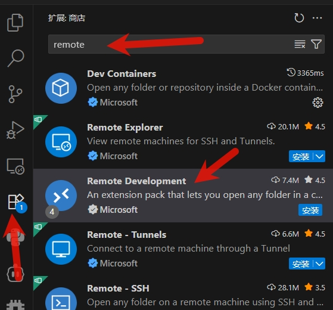</p><p data-lake-id="u272bae4e" id="u272bae4e"><span data-lake-id="u34ad9388" id="u34ad9388">安装完成，在左侧栏目会显示remote插件</span></p><p data-lake-id="u57239e5f" id="u57239e5f">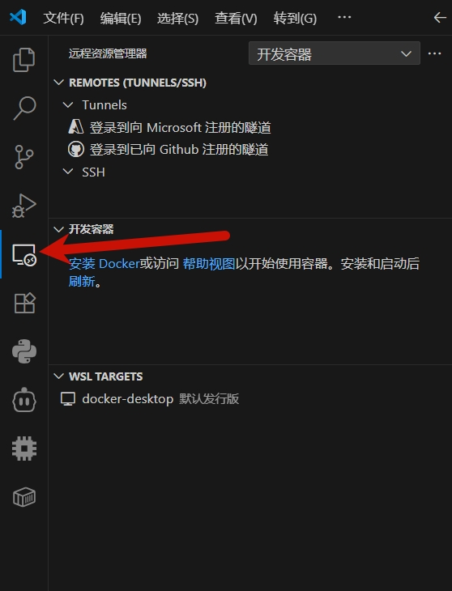</p><h3 data-lake-id="anOK8" id="anOK8"><span data-lake-id="u03c1b51d" id="u03c1b51d">连接远程环境</span></h3><p data-lake-id="uda10c75f" id="uda10c75f">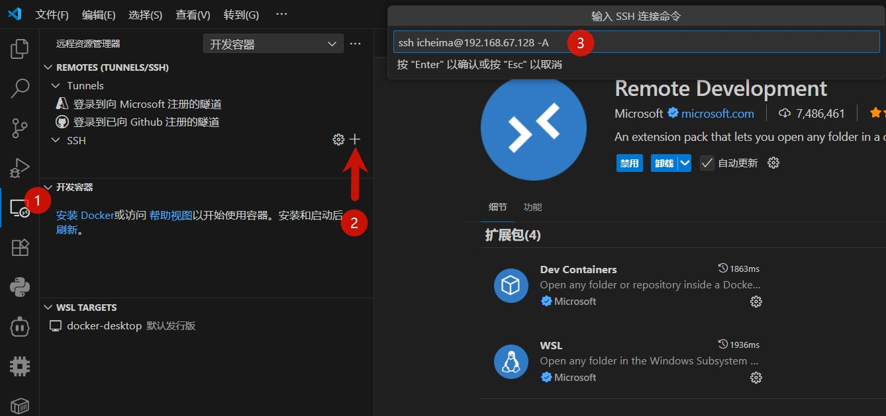</p><p data-lake-id="u20a5a137" id="u20a5a137"><span data-lake-id="u32513380" id="u32513380">添加 SSH连接。输入连接命令:</span></p><span class="yuque-card-unsupported">[codeblock]</span><p data-lake-id="ubf7e2645" id="ubf7e2645"><span data-lake-id="u212f3674" id="u212f3674">用户名为 ubuntu的登录用户名</span></p><p data-lake-id="ud7f8aca7" id="ud7f8aca7"><span data-lake-id="u1d51835f" id="u1d51835f">ip为 ubuntu 的ip地址</span></p><p data-lake-id="ucf625859" id="ucf625859">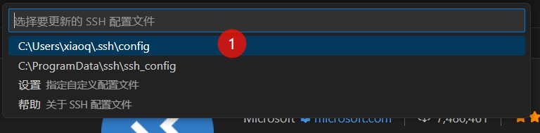</p><p data-lake-id="ub2655fa5" id="ub2655fa5">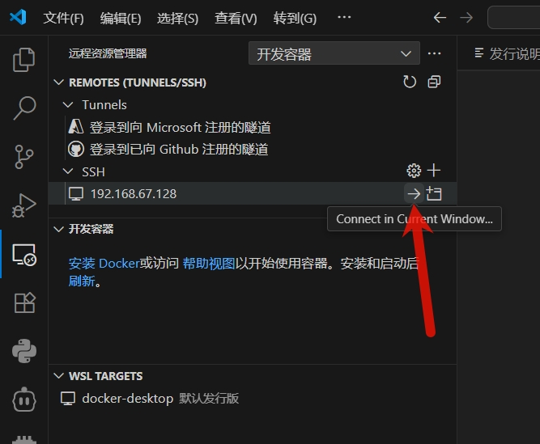</p><p data-lake-id="u9d9006a6" id="u9d9006a6"><span data-lake-id="u8b1b36b7" id="u8b1b36b7">选择远程服务器类型：</span></p><p data-lake-id="ufd13dff6" id="ufd13dff6">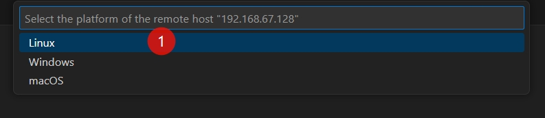</p><p data-lake-id="u40185490" id="u40185490"><span data-lake-id="uac37850b" id="uac37850b">点击继续</span></p><p data-lake-id="u49bd711a" id="u49bd711a">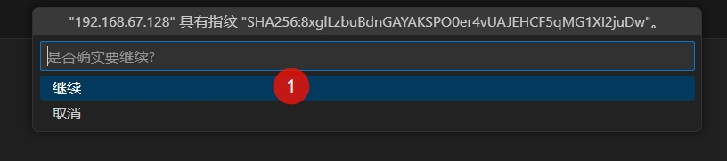</p><p data-lake-id="ue4c91c4b" id="ue4c91c4b"><span data-lake-id="ue43304d1" id="ue43304d1">输入密码</span></p><p data-lake-id="u7d2893aa" id="u7d2893aa">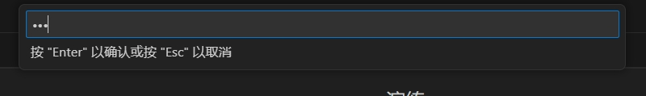</p><p data-lake-id="u523afe36" id="u523afe36"><br/></p><h3 data-lake-id="GtEj9" id="GtEj9"><span data-lake-id="u0b13ecf2" id="u0b13ecf2">打开工作空间</span></h3><p data-lake-id="ub59a7906" id="ub59a7906"><span data-lake-id="u8df0e859" id="u8df0e859">连接成功后，左下角会显示连接成功。</span></p><p data-lake-id="ude668ca2" id="ude668ca2">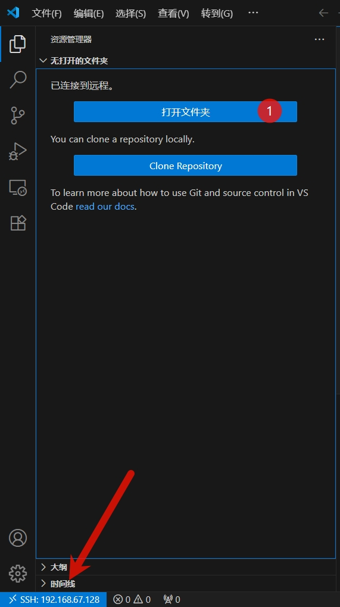</p><p data-lake-id="u8a7aee9d" id="u8a7aee9d"><br/></p><p data-lake-id="u42dd189a" id="u42dd189a"><span data-lake-id="u9cac8c66" id="u9cac8c66">打开文件夹，选择linux下工作目录</span></p><p data-lake-id="u6a902b7c" id="u6a902b7c">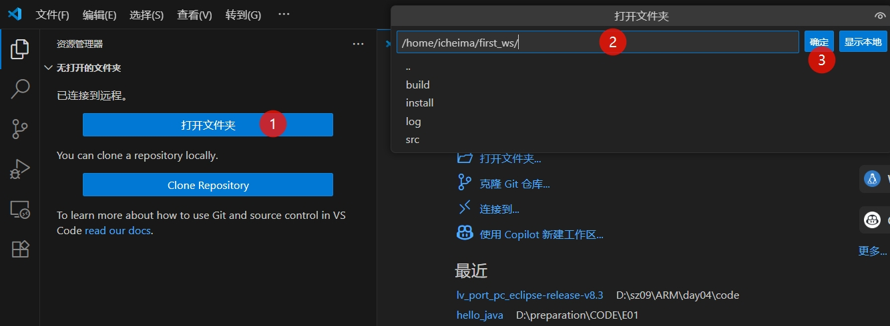</p><p data-lake-id="u84f097ef" id="u84f097ef"><br/></p><p data-lake-id="ufb687c0b" id="ufb687c0b">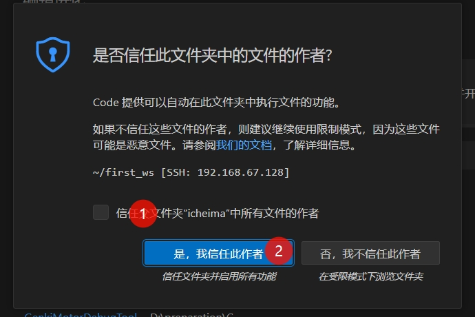</p><p data-lake-id="u4032ff10" id="u4032ff10"><br/></p><h2 data-lake-id="g2muO" id="g2muO"><span data-lake-id="u35ff0843" id="u35ff0843">远程插件安装</span></h2><h3 data-lake-id="h1YqK" id="h1YqK"><span data-lake-id="u6fe2a766" id="u6fe2a766">python 插件安装</span></h3><p data-lake-id="u5fcbe484" id="u5fcbe484"><span data-lake-id="u17106132" id="u17106132">搜索 python 插件，安装</span></p><h3 data-lake-id="zxg90" id="zxg90"><span data-lake-id="u619b6564" id="u619b6564">ros插件安装</span></h3><p data-lake-id="ud7a5bb61" id="ud7a5bb61">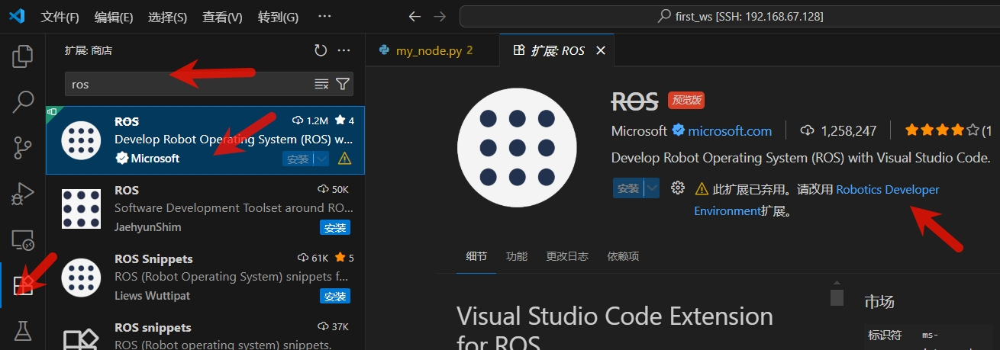</p><p data-lake-id="u2f216ac6" id="u2f216ac6"><br/></p><p data-lake-id="u2098a7d4" id="u2098a7d4">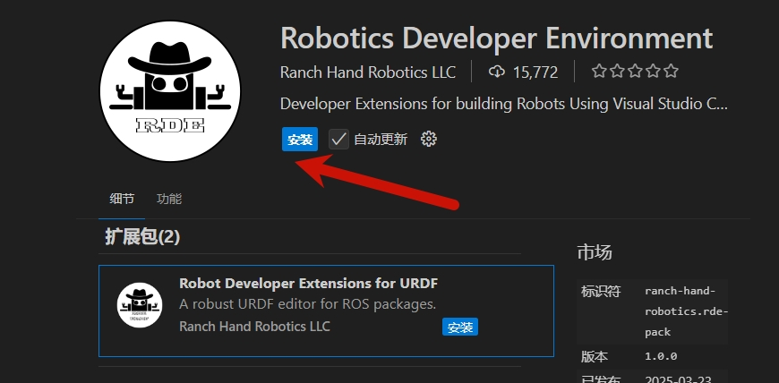</p><p data-lake-id="u27e1121d" id="u27e1121d"><br/></p><p data-lake-id="u12f43c29" id="u12f43c29"><br/></p>